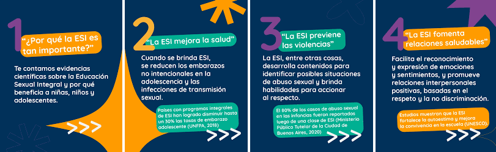

la educacion sexual integral (ESI) es un derecho de todos los estudiantes y una herramienta clave para construir relaciones respetuosas, prevenir abusos y promover la igualdad de genero. A traves del contenido digital podemos llegar a mas personas y generar conciencia. campañas en redes sociales como instagram o tik tok permiten compartir mensajes claros, corton y accesibles que informen, cuestionen estereotipos y promueven el respeto y la diversidad.
TIK TOK hoy en dia tik tok es una de las formas mas usadas para aprender sobre ESI. hay un monton de creadores que suben videos cortos explicando cosas como el consentimiento, metodos anticonceptivos, la diversidad y como tener relaciones sanas. es rapido, facil de entender y se puede compartir con amigos. pero hay que tener cuidado, no todo lo que aparece puede ser verdad, por eso es clave seguir cuentas confiables y chequear cada informacion antes de creer todo lo que vemos.
